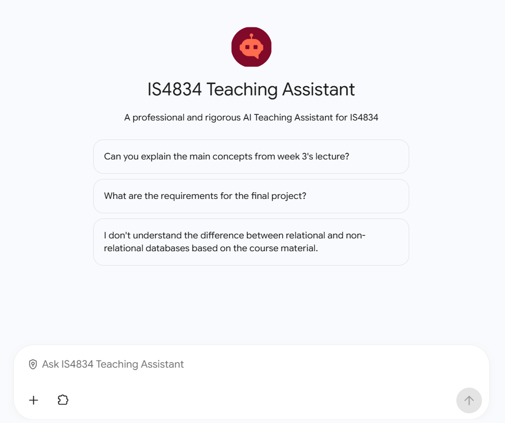
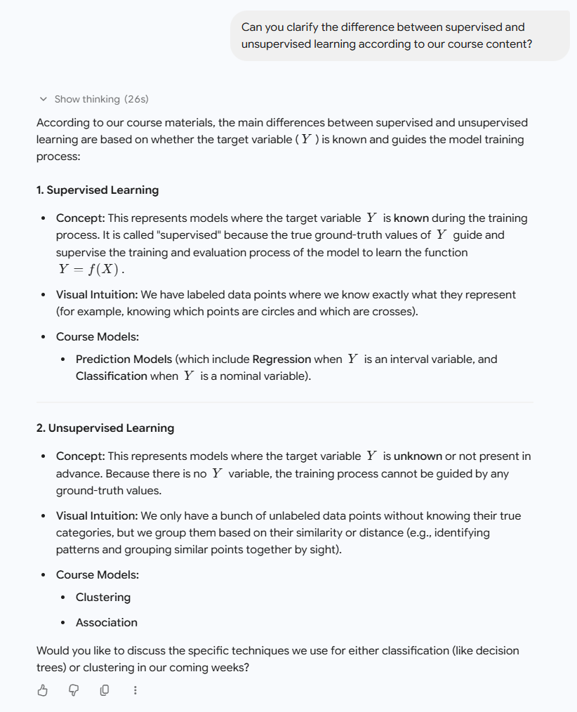
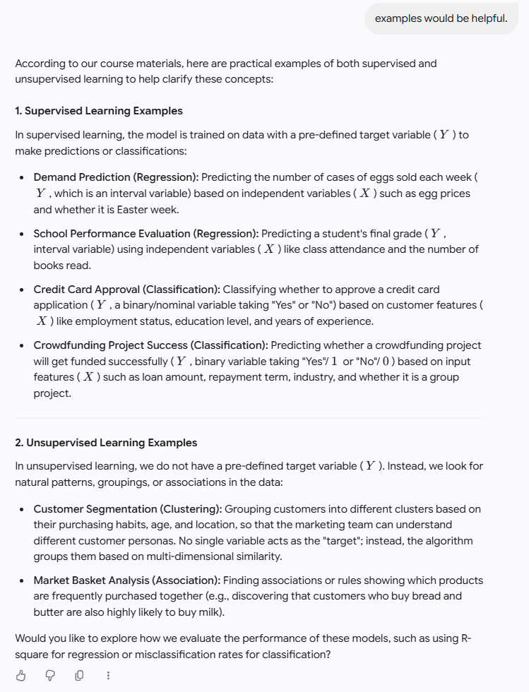

AI Agent
AI 應用開發專員
我使用 Gemini Enterprise 和 Microsoft Copilot Studio，為資訊系統學系的兩門課程設計並開發專用 AI Agent。Agent 經訓練後可精準根據資料庫文件回答課程相關問題，準確率達到 90% 以上。Agent 服務約 300 名用戶，並獲得高度評價。同時我收集測試者反饋，持續優化 prompt 與知識庫資料，並考慮不同背景的使用者，撰寫用戶指南，讓所有人都可以簡單上手使用專用 AI Agent。
開發過程
開發：
使用 Gemini Enterprise和Copilot Studio同時開發 AI Agent，並進行多輪測試，調整改善模型的prompt，評估不同模型的token消耗情況與回答質量，最終選擇Gemini 3.5 flash作為最終的模型。並完成 AI Agent 的設計與開發，供資訊系統學系兩門課程使用，服務約 300 名用戶，並獲得高度評價。
手冊與問答：
撰寫了完整的用戶手冊，並為用戶提供問答支援。手冊說明如何使用 AI Agent，問答支援則回應使用中的具體問題，讓用戶既有書面指引，也能在遇到問題時得到直接協助。
部門協調：
AI Agent的開發涉及多個部門，我與CityU的資訊系統學系教授合作，並積極與學校的IT部門，學生，測試者等進行溝通討論，平衡各方需求，運用合理談判方法，為AI Agent的開發提供資源和資金上的支持，最終成功落地使用。
工具使用：
我擁有豐富的AI工具使用經驗，開發過程中使用cursor撰寫Python腳本，幫助收集、整理並清理課程訓練材料，成功將複雜的課程資料轉換為易於理解的格式。並透過OneDrive連接這些材料，建立穩健的知識庫。整理後的材料成為 AI Agent 回答問題時可依據的內容，保證答案的準確性和一致性。
回饋與改進： 收集用戶回饋，分析表現數據，並反覆改進邏輯與準確度。回饋和表現數據被用來調整 AI Agent 如何推理，以及回答是否準確，因此這個服務約 300 名用戶的工具可以按實際使用繼續改進。
介面與使用示例




